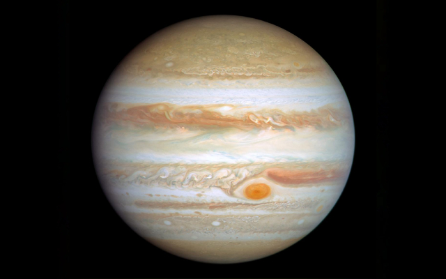
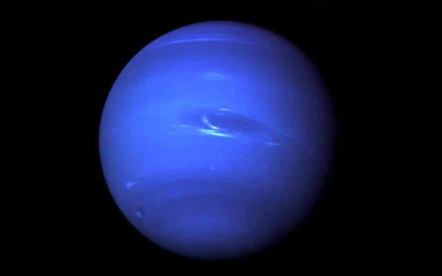

Welcome to Nebula
This website is dedicated to providing in-depth information on the planets residing in our solar system. Explore and begin your research using the resources below.
Planets
Discover the wonders of our solar system
-
Mercury

Mercury is the first planet from the Sun, and also the smallest within our Solar System.
Learn more -
Venus

Venus is the second planet from the Sun. It is one of the four terrestrial planets within our Solar System.
Learn more -
Earth

Earth is the third planet from the Sun. As of yet, it is the only astronomical object known to contain life.
Learn more -
Mars

Mars is the fourth planet from the Sun, with a surface that is coloured a fusion of orange and red.
Learn more -
Jupiter
Jupiter is the fifth planet from the Sun, and also the largest in the Solar System.
Learn more -
Saturn

Saturn is the sixth planet from the Sun, and also the second largest in the Solar System, after Jupiter.
Learn more -
Uranus

Uranus is the seventh planet from the Sun. It is a gas giant like Jupiter and Saturn, and also cyan-coloured.
Learn more -
Neptune
Neptune is the eighth, and as of yet, is currently farthest known planet from the Sun.
Learn more -
Pluto

Pluto, formerly the ninth-most planet from the Sun, is a dwarf planet that resides in the Kuiper belt.
Learn more